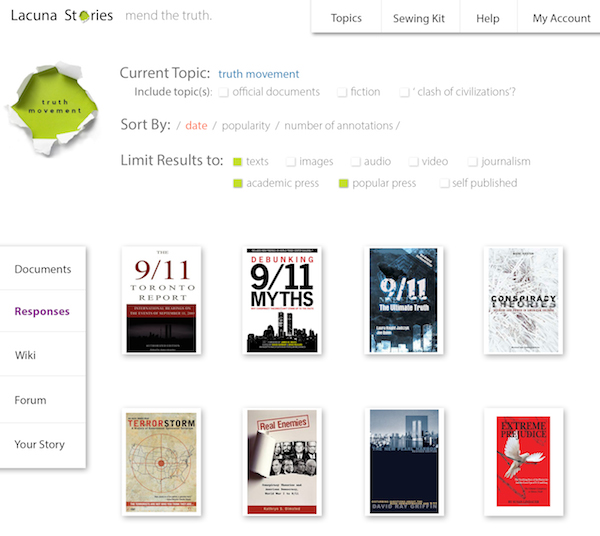
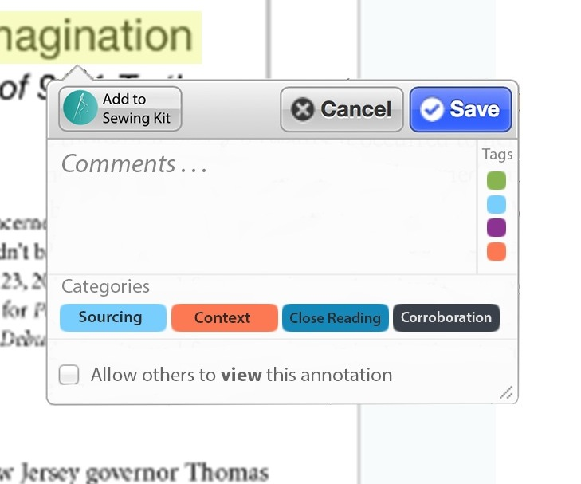
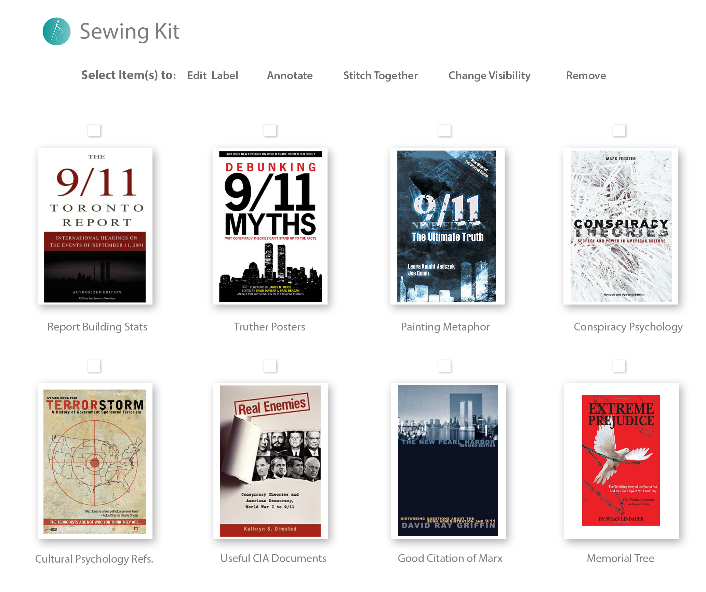
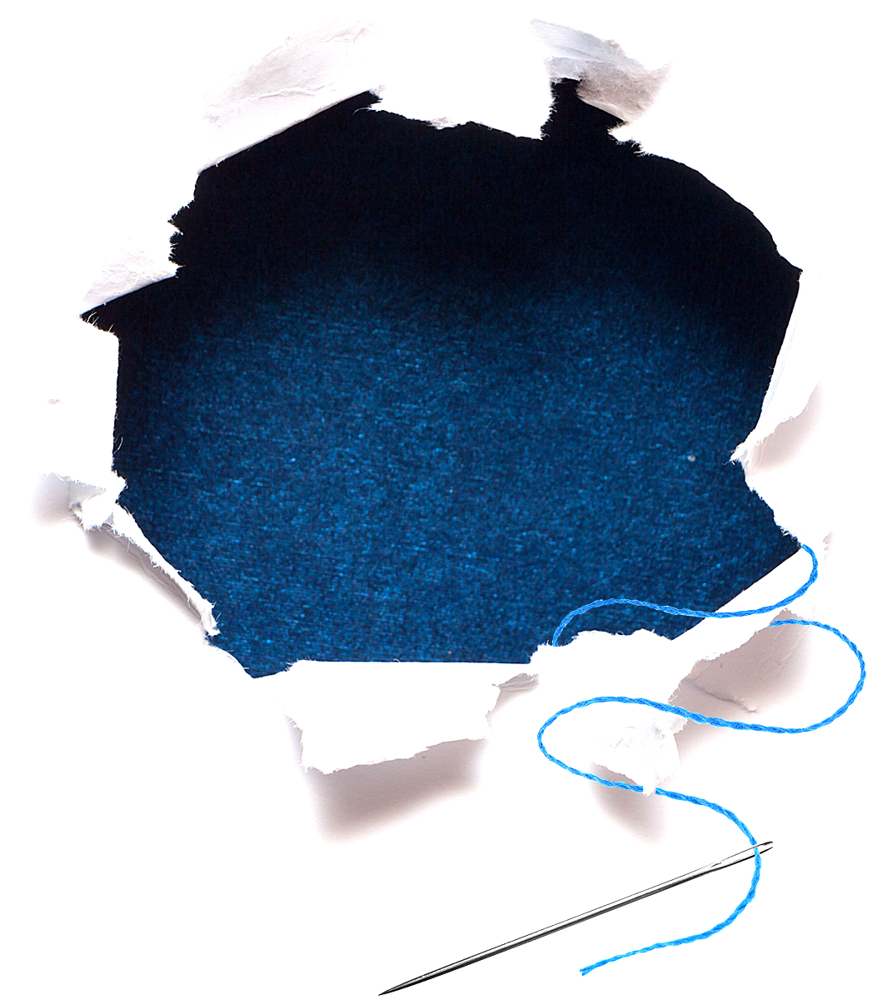
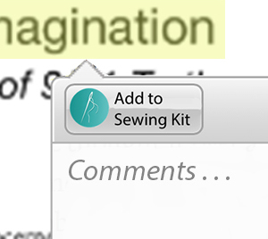
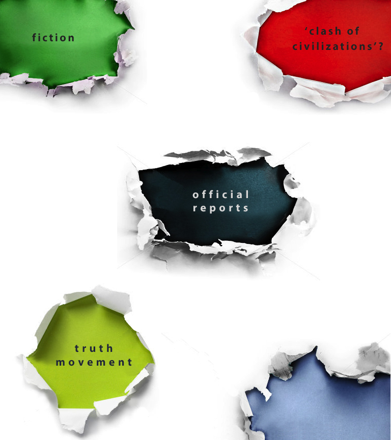

Lacuna Stories is...

Lacuna Stories is ... a diverse ecosystem.
Interpreting complex phenomena through various media is more important than ever in today's information-rich world. Lacuna Stories is an exploratory, interactive online ecosystem where people can research and discuss significant historical events like 9/11 using the wide array of sources we have collected, which include governmental, professional, academic, literary, and popular documents and responses.
Lacuna Stories doesn't aim to construct a single narrative or a conclusive "truth" of the event. Instead, the diversity of sources and the kinds of interactions and conversations facilitated by Lacuna Stories encourage a form of creative work to inspires new responses to and stories about 9/11.
Lacuna Stories doesn't aim to construct a single narrative or a conclusive "truth" of the event. Instead, the diversity of sources and the kinds of interactions and conversations facilitated by Lacuna Stories encourage a form of creative work to inspires new responses to and stories about 9/11.

Lacuna Stories is ... annotatable.
Lacuna Stories' subtitle mend the truth refers to functionality we have designed that allows users to connect annotated documents, fiction, scholarship, wikis, and user-generated forums and blogs in exciting and new ways. To encourage exploration, research, and discussion, all texts, images, video, and audio on Lacuna Stories are annotatable. Each annotation can be color-coded based on user-defined categories, and can be kept private, shared with individuals or small groups, or shared with the general public. All annotations are also saved in users' individual "sewing kits", a creative space where annotations can be further edited, stitched to other sources, and the character of that thread can be described.
For instance, a user may "stitch together" a line from the novel Extremely Loud and Incredibly Close along with a section from the 9/11 commission report. When hovering over an annotation for a script for the television series Homeland, for example, users of Lacuna Stories might see that 8 people have stitched that annotation to a wikipedia entry, 12 people have stitched it to a section of the 9/11 commission report, and 24 people have stitched it to a forum discussion.
For instance, a user may "stitch together" a line from the novel Extremely Loud and Incredibly Close along with a section from the 9/11 commission report. When hovering over an annotation for a script for the television series Homeland, for example, users of Lacuna Stories might see that 8 people have stitched that annotation to a wikipedia entry, 12 people have stitched it to a section of the 9/11 commission report, and 24 people have stitched it to a forum discussion.

Lacuna Stories is ... a thinking tool.
Lacuna Stories' unique annotation tools also encourage skills such as historical thinking, close reading, and a critical comparison of sources. History, representations of the past, and why they matter have been at the forefront of academic and popular debates in recent decades. Lacuna Stories' diverse, multimedia environment provides tools for instructors, students, and the general public to "mend" the gaps in knowledge of major historical events and to develop their own narratives.
Within humanities education, specifically, the interactive, multimedia functionality of Lacuna Stories goes beyond simply replacing print reading and viewing practices. Instead, Lacuna Stories creates new and exciting opportunities to engage with various texts and media in ways that reflect the networked state of knowledge today.
Within humanities education, specifically, the interactive, multimedia functionality of Lacuna Stories goes beyond simply replacing print reading and viewing practices. Instead, Lacuna Stories creates new and exciting opportunities to engage with various texts and media in ways that reflect the networked state of knowledge today.

Lacuna Stories is ... collaborative.
Interpreting complex phenomena through various media is more important than ever in today's information-rich world. Lacuna Stories is an exploratory, interactive online ecosystem where people can research and discuss significant historical events like 9/11 using the wide array of sources we have collected, which include governmental, professional, academic, literary, and popular documents and responses.
Lacuna Stories doesn't aim to construct a single narrative or a conclusive truth of the event. Instead, the diversity of sources and the kinds of interactions and conversations facilitated by Lacuna Stories encourage a form of creative work to inspires new responses to and stories about 9/11.
Lacuna Stories doesn't aim to construct a single narrative or a conclusive truth of the event. Instead, the diversity of sources and the kinds of interactions and conversations facilitated by Lacuna Stories encourage a form of creative work to inspires new responses to and stories about 9/11.

Lacuna Stories is ... empowering.
Lacuna Stories is an empowering and engaging open-source platform to gather and encourage responses in a generative and creative way. The crowd-sourced, open linking from users' digital "sewing kits" exemplifies the idea that connections among narratives can be made quickly and simply which, empowers users to "mend," create, or share meaningful associations. The interface is simple, intuitive, and sleek toallow users to enjoy interacting with the richness of the materials we host.

Lacuna Stories is ... urgent.
Lacuna Stories responds to the vast and urgent academic and public interest in examining and understanding 9/11. The platform will eventually broaden to include other complex events like the assassination of John F. Kennedy, the fall of the Berlin Wall in 1989, or the Arab Spring.
By providing a platform that fosters habits of thinking historically, Lacuna Stories invites students, researchers, artists, or the general visitor to experience an online exploratory environment where the public can exchange ideas, collaborate, and engage in constructive dialogues about major historical events.
By providing a platform that fosters habits of thinking historically, Lacuna Stories invites students, researchers, artists, or the general visitor to experience an online exploratory environment where the public can exchange ideas, collaborate, and engage in constructive dialogues about major historical events.